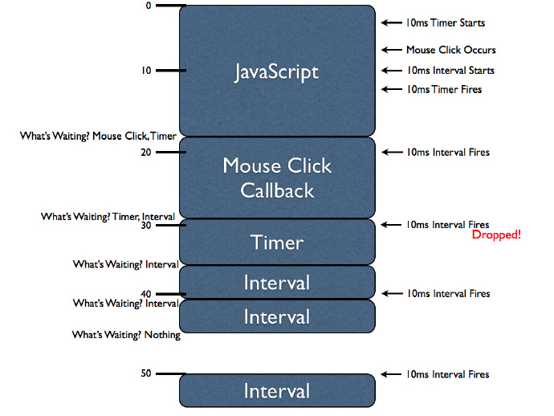

从setTimeout谈JavaScript运行机制
从setTimeout说起
众所周知，JavaScript是单线程的编程，什么是单线程，就是说同一时间JavaScript只能执行一段代码，如果这段代码要执行很长时间，那么之后的代码只能尽情地等待它执行完才能有机会执行，不像人一样，人是多线程的，所以你可以一边观看某岛国动作片，一边尽情挥洒汗水。JavaScript单线程机制也是迫不得已，假设有多个线程，同时修改某个dom元素，那么到底是听哪个线程的呢？
既然已经明确JavaScript是单线程的语言，于是我们想方设法要想出JavaScript的异步方案也就可以理解了。比如执行到某段代码，需求是1000ms后调用方法A，JavaScript没有sleep函数能挂起线程一秒啊？如何能够使得代码做到一边等待A方法执行，一边继续执行下面的代码，仿佛开了两个线程一般？机制的科学家们想出了setTimeout方法。
setTimeout方法想必大家都已经很熟悉了，那么setTimeout(function(){..}, a)真的是ams后执行对应的回调吗？
setTimeout(function() {
console.log('hello world');
}, 1000);
while(true) {};
1s中之后，控制台并没有像预料中的一样输出字符串，而网页标签上的圈圈一直转啊转，掐指一算，可能陷入while(true){}的死循环中了，可是为什么呢？虽然会陷入死循环可是也得先输出字符串啊！这就要扯到JavaScript运行机制了。
JavaScript运行机制
一段JavaScript代码到底是如何执行的？阮一峰老师有篇不错的文章（JavaScript 运行机制详解：再谈Event Loop），我就不再重复造轮子了；如果觉得太长不看的话，楼主简短地大白话描述下。一段js代码（里面可能包含一些setTimeout、鼠标点击、ajax等事件），从上到下开始执行，遇到setTimeout、鼠标点击等事件，异步执行它们，此时并不会影响代码主体继续往下执行(当线程中没有执行任何同步代码的前提下才会执行异步代码)，一旦异步事件执行完，回调函数返回，将它们按次序加到执行队列中，这时要注意了，如果主体代码没有执行完的话，是永远也不会触发callback的，这也就是上面的一段代码导致浏览器假死的原因（主体代码中的while(true){}还没执行完）。
网上还有一篇流传甚广的文章（猛戳How JavaScript Timers Work），文章里有张很好的图，我把它盗过来了。
我们开始执行代码。第一块代码大概执行了18ms，也就是JavaScript的主体代码，在执行过程中，先触发了一个setTimeout函数，代码继续执行，只等10ms后响应setTimeout的回调，接着是一个鼠标点击事件，该事件有个回调（或许是alert一些东西），不能立即执行（单线程），因为js主体代码还没执行完，所以这个回调被插入执行队列中，等待执行；接着setInterval函数被执行，我们知道，此后每隔10ms都会有回调（尝试）插入队列中，运行到第10ms的时候，setTimeout函数的回调插入队列。js函数主体运行完后，大概是18ms这个点，我们发现队列中有个click的callback，还有个setTimeout的callback，于是我们先运行前者，在运行的过程中，setInterval的10ms响应时间也过了，同样回调被插入队列。click的回调运行完，运行setTimeout的回调，这时又10ms过去了，setInterval又产生了回调，但是这个回调被抛弃了，之后发生的事大家都一目了然了。
这里有一点我不太明白，就是关于interval回调的drop。按照How JavaScript Timers Work里的说法是，如果等待队列里已经有同一个interval函数的回调了，将不会有相同的回调插入等待队列。
“Note that while mouse click handler is executing the first interval callback executes. As with the timer its handler is queued for later execution. However, note that when the interval is fired again (when the timer handler is executing) this time that handler execution is dropped. If you were to queue up all interval callbacks when a large block of code is executing the result would be a bunch of intervals executing with no delay between them, upon completion. Instead browsers tend to simply wait until no more interval handlers are queued (for the interval in question) before queuing more.”
查到一篇前辈的文章Javascript定时器学习笔记，里面说“为了确保定时器代码插入到队列总的最小间隔为指定时间。当使用setInterval()时，仅当没有该定时器的任何其他代码实例时，才能将定时器代码添加到代码队列中”。但是我自己实践了下觉得可能并非如此：
var startTime = +new Date;
var count = 0;
var handle = setInterval(function() {
console.log('hello world');
count++;
if(count === 1000) clearInterval(handle);
}, 10);
while(+new Date - startTime < 10 * 1000) {};
按照上文的说法，由于while对线程的“阻塞”，使得相同的setInterval的回调不能加在等待队列中，但是实际在chrome和ff的控制台都输出了1000个hello world的字符串，我也去原文博主的文章下留言询问了下，暂时还没答复我；也可能是我对setInterval的认识的姿势不对导致，如果有知道的朋友还望不吝赐教，万分感激！
总之，定时器仅仅是在未来的某个时刻将代码添加到代码队列中，执行时机是不能保证的。
setTimeout VS setInterval
以前看到过这样的话，setInterval的功能都能用setTimeout去实现，想想也对，无穷尽地递归调用setTimeout不就是setInterval了吗？
setInterval(function() {
// some code
}, 10);
根据前文描述，我们大概懂了以上setInterval回调函数的执行时间差<=10ms，因为可能会由于线程阻塞，使得一系列的回调全部在排队。用setTimeout实现的setInterval效果呢？
// 1
function func() {
setTimeout(function() {
// some code
func();
}, 10);
}
func();
// 2
setTimeout(function() {
// some code
setTimeout(arguments.callee, 1000);
}, 10);
很显然两个回调之间的间隔是>10ms的，因为前面一个回调在队列中排队，如果没有等到，是不会执行下面的回调的，而>10ms是因为回调中的代码也要执行时间。换句话说，setInterval的回调是并列的，前一个回调（有没有执行）并不会影响后一个回调（插入队列），而setTimeout之间的回调是嵌套的，后一个回调是前一个回调的回调（有点绕口令的意思）
2015.7.1修正
经验证，确实是楼主对于setInterval认识的姿势有误，也对得起两个反对的差评，当使用setInterval()时，仅当没有该定时器的任何其他代码实例时，才能将定时器代码添加到代码队列中。
楼主的示例代码，正如评论中说的一样，无论有无阻塞，都会运行1000次。代码修改如下：
var startTime = +new Date;
var handle = setInterval(function() {
console.log('hello world');
}, 3000);
while(+new Date - startTime < 10 * 1000) {};
如果按照之前的认识，在while阻塞过程中，setInterval应该插入了3个回调函数，而当while运行完后，控制台应该打出连续3个字符串，但是并没有，说明确实只加入了一个回调函数，其他两个被drop了。
所以确实在使用setInterval时：
1.某些间隔会被跳过
2.多个定时器的代码执行之间的间隔可能会比预期的小（当前的setInterval回调正在执行，后一个添加）